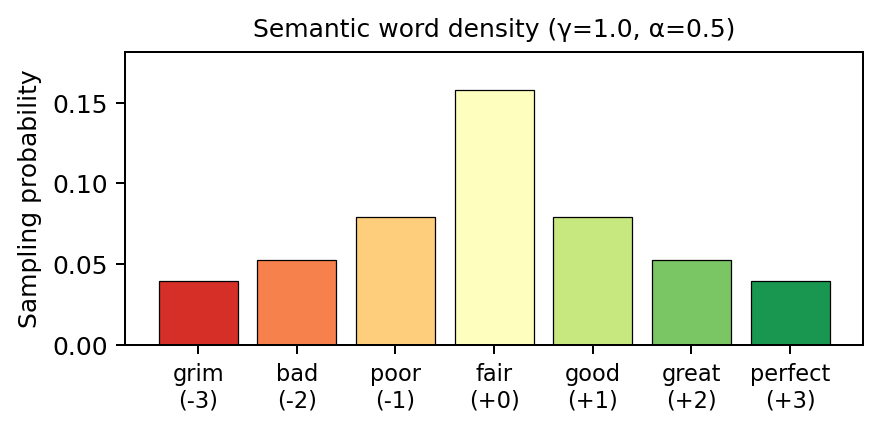

Regression: bag of words
The bag-of-words (BoW) setup isolates noise-robustness of SL, GRPO, and MaxRL in a zero-step rollout setting: the model sees a single prompt and predicts a scalar target with no sequential reasoning. There are three versions of the dataset:
- Homogeneous hardness: a single, global signal-to-target corr \(\rho\).
- Unlearnable heteroskedasticity: global signal corr \(\rho\); random by-row noise variability.
- Learnable heteroskedasticity: global signal corr \(\rho\); semantically learnable by-semantic-word noise variability (some words are harder to learn than others).
TL; DR
No advantage of SL / MaxRL over GRPO in the BoW setup, in either homogeneous or heterogeneous settings.
Dataset
Homogeneous baseline
Each prompt is \(L\) words sampled iid from a mixture of semantic words, which carries signal, and auxiliary words, which are pure fillers. The target is a noise-corrupted linear function of word content, parameterized by the correlation between signal and target \(\rho \in (0, 1]\).
7-word vocabulary. Semantic words map to integer values centered at zero:
| grim | bad | poor | fair | good | great | perfect |
|---|---|---|---|---|---|---|
| \(-3\) | \(-2\) | \(-1\) | \(0\) | \(+1\) | \(+2\) | \(+3\) |
The 256 auxiliary words (common function words: the, a, and, if, because, …) carry value 0. We also define variants with more (e.g. \(11\), \(15\)) semantic words.
Sampling distribution. Semantic words share mass \(1 - \alpha\) (where \(\alpha\) = aux_words_ratio), shaped by a power-law centered on the neutral word “fair”: \(p_i \propto (1 + |i - \text{center}|)^{-\gamma}\). Auxiliary words uniformly split mass \(\alpha\).

Target generation. Given a prompt of length \(L\): \[ \text{signal} = \frac{\rho}{\sigma\sqrt{L}} \sum_{i=1}^L v_i, \qquad \text{target} = \text{signal} + \mathcal{N}(0, \sqrt{1 - \rho^2}) \] where \(\sigma\) is the per-token standard deviation under the full mixture (zero mean by symmetry). By construction \(\text{Var}(\text{target}) = 1\) and \(\text{corr}(\text{signal}, \text{target}) = \rho\).
Consider 8-word prompts; we compute the per-word signal stdev \(\sigma = 1.14\), so the per-prompt stdev \(\sqrt{L}\,\sigma = 3.21\). Semantic words are bolded:
Low-signal regime: \(\rho = 0.01\) — multiplier \(\rho / (\sigma \sqrt{L}) = 0.0031\), noise stdev \(\sqrt{1 - \rho^2} \approx 1.00\):
both idea fair poor rather bad grim then
\(\sum v_i = -6\), signal \(= 0.0031 \times (-6) = -0.019\), target \(= -2.54\)
High-signal regime: \(\rho = 0.89\) — multiplier \(= 0.277\), noise stdev \(\sqrt{1 - \rho^2} = 0.46\):
good good floor good good good perfect poor
\(\sum v_i = +7\), signal \(= 0.277 \times 7 = 1.94\), target \(= 1.78\)
Word-level heteroskedasticity (learnable)
We propose another heteroskedastic variation where hardness is tied to word content, so it is in principle recoverable from the prompt. Semantic words are ranked by \(|v(w)|\) and assigned a quantile \(q(w) \in (0, 1)\); auxiliary words carry zero hardness. The dataset is parameterized by global signal-to-target correlation \(\rho\), and a difficulty skew snr_halflife_in_word_quantile
The raw per-word multiplier is \[
\tilde a(w) \;=\; \begin{cases} 2^{(q(w) - 1/2)\,/\,h_{\text{word}}} & w \text{ semantic},\\ 0 & w \text{ auxiliary}, \end{cases}
\] with \(h_{\text{word}}\) = snr_halflife_in_word_quantile. For a prompt \(x = (w_1, \dots, w_L)\) the prompt-level multiplier is the per-token RMS \[
\tilde a(x)^2 = \frac{1}{L} \sum_{j=1}^{L} \tilde a(w_j)^2,
\qquad
a(x) = \tilde a(x) \,/\, \sqrt{\mathbb{E}_{w \sim p}[\tilde a(w)^2]},
\] so that \(\mathbb{E}[a(x)^2] = 1\) under the prompt distribution. Targets still preserve the global correlation \(\rho\): \[
\text{target}(x) = \text{signal}(x) + \sqrt{1-\rho^2}\, a(x)\, \varepsilon,
\]
Experiments
See experiments/bow/README.md for sweep and single-run instructions.
Homogeneous bag-of-words
This dataset tests the hypothesis:
Is SL (or MaxRL) more robust than GRPO at harder, i.e. lower signal-to-noise, tasks?
Null finding: not if the samples are uniformly hard.
Note that the x-axis is not uniformly scaled above! Figures will be completed as more experiments complete (sweep undergoing).
Some other findings of interest:
- From the GRPO graph above: the number of rollouts don’t appear to matter that much.
- The dataset has desired properties – we observe overfitting as well as general fitting difficulty as noise increases.
Word-level heterogeneous bag-of-words
Null finding: no discernable difference in the heterogeneous setup.
The updated hypothesis is that heterogeneity via irreducible noise, along the purely statistical axis, is insufficient to differentiate the ML objective. The next step is to introduce true, semantic variability.